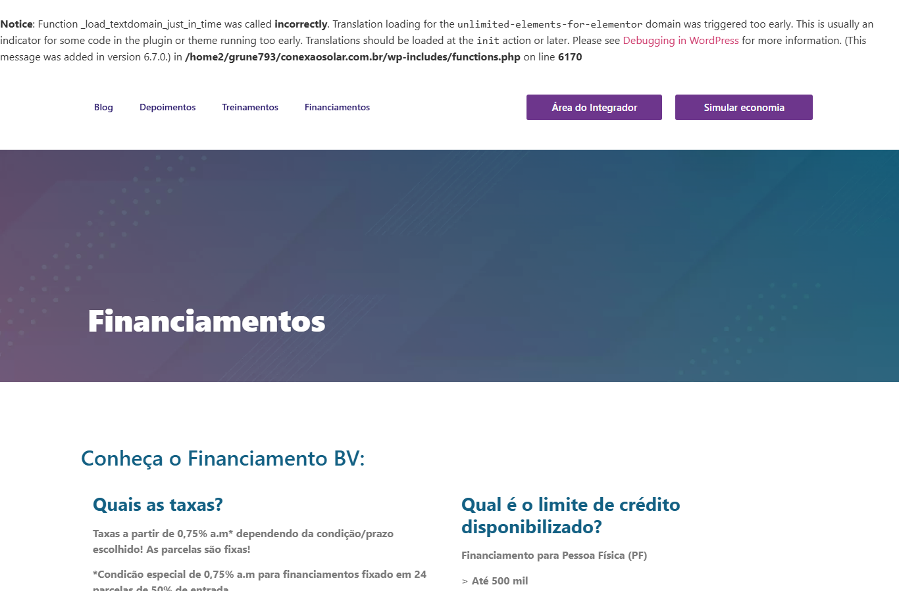
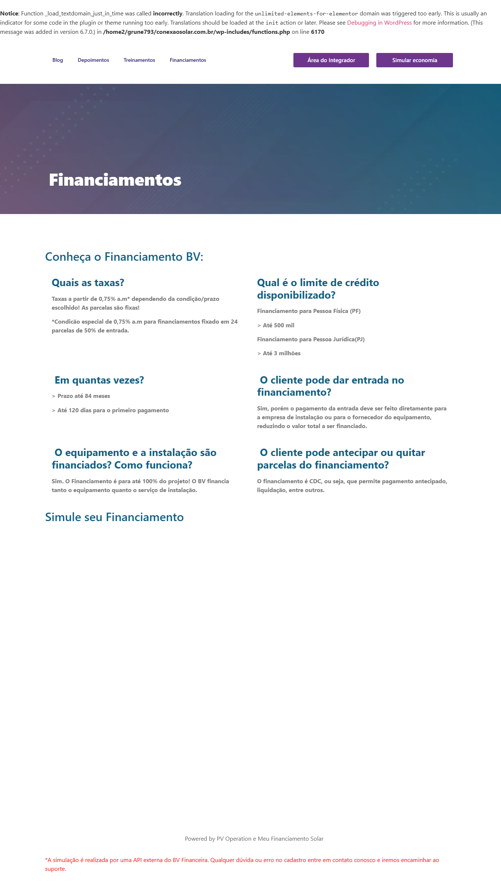

Sistema de Investigação de Marca e Identidade Online
https://conexaosolar.com.br/financiamentos/
Prioridade: MEDIUM · Cenário: B_AMBIGUOUS_COMMUNICATION · Revisão humana: PENDING
Trata-se de empresa de energia solar (Conexão Solar) dentro do escopo de investigação que mantém página dedicada à oferta e simulação de 'Financiamento BV' ('Conheça o Financiamento BV:' / 'Simule seu Financiamento'). Embora utilize linguagem em 3ª pessoa e mencione integração via API externa / Meu Financiamento Solar, a página omite por completo a razão social, o CNPJ do estabelecimento e a declaração de correspondente bancário exigidos pela Resolução CMN nº 4.935/2021. Classificado como B_AMBIGUOUS_COMMUNICATION (REVIEW_REQUIRED, prioridade MEDIUM). [Revisor: CONFIRM] A análise do analista é sólida e deve ser confirmada. Trata-se de uma empresa integradora/comercial de energia solar ('Conexão Solar') que promove ativamente o 'Financiamento BV' e disponibiliza área de simulação ('Simule seu Financiamento' / 'API externa do BV Financeira'), sem apresentar no site sua razão social, CNPJ, aviso de correspondente bancário ou telefone de ouvidoria, em desacordo com as exigências de transparência da Resolução CMN nº 4.935/2021. Mantém-se REVIEW_REQUIRED com prioridade MEDIUM.


| Ref | Tipo | Local | Conteúdo |
|---|---|---|---|
| E-URL | domain | url | URL final: https://conexaosolar.com.br/financiamentos/ (domínio: conexaosolar.com.br) |
| E-DISC-001 | text | search_index | Índice de busca (grounding): conexaosolar.com.br — **Estabelecimento:** Conexão Solar (`https://conexaosolar.com.br`) | **URL:** `https://conexaosolar.com.br` e `https://energyinfinity.com.br` (páginas `/financiamentos`) | **Uso da marca:** Ambas as empresas destacam seções exclusivas chamadas **"Conheça o Financiamento BV"** / **"BV FINANCEIRA"**, divulgando taxas específicas (a partir de 0,75% a.m. e 0,94% a.m.), carência de até 120 dias e incorporando **simuladores próprios** na página (*"Simule seu Financiamento... realizada por uma API externa do BV Financeira"*) | **Conformidade (Razão Social, CNPJ e Condição de Correspondente):** Ambas **omitem** na página do simulador a declaração formal de correspondente bancário exigida pela Resolução CMN nº 4.935/2021 e a identificação clara de razão social e CNPJ junto à oferta de crédito |
| E-SHOT-VIEWPORT | screenshot | viewport | evidence\C324115fcc9\attempt-1\viewport.png (sha256 5f55642eeefd60ff…) |
| E-SHOT-FULL | screenshot | page | evidence\C324115fcc9\attempt-1\fullpage.png (sha256 8306701d125dfab1…) |
| E-TITLE | title | head | Financiamentos – Conexão Solar |
| E-CANONICAL | meta | head | https://conexaosolar.com.br/financiamentos/ |
| E-HEAD-1 | heading | page | Financiamentos |
| E-HEAD-2 | heading | page | Conheça o Financiamento BV: |
| E-HEAD-3 | heading | page | Quais as taxas? |
| E-HEAD-4 | heading | page | Qual é o limite de crédito disponibilizado? |
| E-HEAD-5 | heading | page | Em quantas vezes? |
| E-HEAD-6 | heading | page | O cliente pode dar entrada no financiamento? |
| E-HEAD-7 | heading | page | O equipamento e a instalação são financiados? Como funciona? |
| E-HEAD-8 | heading | page | O cliente pode antecipar ou quitar parcelas do financiamento? |
| E-HEAD-9 | heading | page | Simule seu Financiamento |
| E-HDR | text | header | Blog Depoimentos Treinamentos Financiamentos Área do Integrador Simular economia |
| E-FOLD | text | viewport (acima da dobra) | Notice : Function _load_textdomain_just_in_time was called incorrectly . Translation loading for the unlimited-elements-for-elementor domain was triggered too early. This is usually an indicator for some code in the plugin or theme running too early. Translations should be loaded at the init action or later. Please see Debugging in WordPress for more information. (This message was added in version 6.7.0.) in /home2/grune793/conexaosolar.com.br/wp-includes/functions.php on line 6170 Blog Depoimentos Treinamentos Financiamentos Área do Integrador Simular economia Financiamentos Conheça o Financiamento BV: Quais as taxas? Taxas a partir de 0,75% a.m* dependendo da condição/prazo escolhido! As parcelas são fixas! *Condicão especial de 0,75% a.m para financiamentos fixado em 24 parcelas de 50% de entrada. Qual é o limite de crédito disponibilizado? Financiamento para Pessoa Física (PF) > Até 500 mil |
| E-NAV | nav | header | Blog <https://conexaosolar.com.br/blog/> | Depoimentos <https://conexaosolar.com.br/depoimentos/> | Treinamentos <https://conexaosolar.com.br/treinamentos/> | Financiamentos <https://conexaosolar.com.br/financiamentos/> | Área do Integrador <https://conexaosolar.com.br/financiamentos/#> | Simular economia <https://conexaosolar.com.br/financiamentos/#> |
| E-CTA-1 | cta | header | Área do Integrador <https://conexaosolar.com.br/financiamentos/#> |
| E-CTA-2 | cta | header | Simular economia <https://conexaosolar.com.br/financiamentos/#> |
| E-OFFICIAL-LINKS | link | page | Meu Financiamento Solar <https://meufinanciamentosolar.com.br/> |
| E-TXT-001 | text | page | Conheça o Financiamento BV: |
| E-TXT-002 | text | page | Sim. O Financiamento é para até 100% do projeto! O BV financia tanto o equipamento quanto o serviço de instalação. |
| E-TXT-003 | text | page | *A simulação é realizada por uma API externa do BV Financeira. Qualquer dúvida ou erro no cadastro entre em contato conosco e iremos encaminhar ao suporte. |
| Dimensão | Sinal | Achado | Refs |
|---|---|---|---|
| VISUAL_IDENTITY | LEGITIMATE | O site utiliza layout próprio (tons de roxo e azul-petróleo) distinto da identidade visual institucional do Banco BV. | E-SHOT-VIEWPORT E-SHOT-FULL |
| DECLARED_COMMERCIAL_IDENTITY | CONFUSION | Embora o título mencione 'Conexão Solar', não há identificação de razão social nem CNPJ do estabelecimento na página de financiamento. | E-TITLE E-SHOT-FULL E-DISC-001 |
| CORRESPONDENT_TRANSPARENCY | CONFUSION | Ausência de declaração explícita da condição de correspondente bancário ou parceiro comercial independente nos termos da Resolução CMN nº 4.935/2021. | E-SHOT-FULL E-DISC-001 |
| INSTITUTIONAL_LANGUAGE | LEGITIMATE | A linguagem refere-se ao banco em terceira pessoa ('Conheça o Financiamento BV', 'O BV financia tanto o equipamento quanto o serviço de instalação', 'API externa do BV Financeira'). | E-HEAD-2 E-TXT-002 E-TXT-003 |
| LOGO_USAGE | LEGITIMATE | Não há uso do logotipo do Banco BV na página inspecionada. | E-SHOT-VIEWPORT E-SHOT-FULL |
| SERVICE_JOURNEY | CONFUSION | Oferta dedicada de 'Financiamento BV' com seção 'Simule seu Financiamento' integrada via API externa ('Powered by PV Operation e Meu Financiamento Solar'), sem transparência de correspondente na página. | E-HEAD-2 E-HEAD-9 E-TXT-003 E-OFFICIAL-LINKS E-SHOT-FULL |
| CONTACT_CHANNELS | NEUTRAL | Não há canais de atendimento, telefones ou dados de ouvidoria exibidos na página. | E-SHOT-FULL |
| CONSUMER_CONFUSION | CONFUSION | A oferta exclusiva de financiamento BV com simulador embutido sem CNPJ e sem aviso de correspondente bancário reduz a transparência exigida na intermediação de crédito. | E-HEAD-2 E-HEAD-9 E-SHOT-FULL E-DISC-001 |
Trata-se de empresa de energia solar (Conexão Solar) dentro do escopo de investigação que mantém página dedicada à oferta e simulação de 'Financiamento BV' ('Conheça o Financiamento BV:' / 'Simule seu Financiamento'). Embora utilize linguagem em 3ª pessoa e mencione integração via API externa / Meu Financiamento Solar, a página omite por completo a razão social, o CNPJ do estabelecimento e a declaração de correspondente bancário exigidos pela Resolução CMN nº 4.935/2021. Classificado como B_AMBIGUOUS_COMMUNICATION (REVIEW_REQUIRED, prioridade MEDIUM).
Nenhum CNPJ ou razão social identificáveis no conteúdo coletado.
| Tipo | Valor | Ref | Contexto |
|---|---|---|---|
| domain | conexaosolar.com.br | E-URL |
Mapeamento indicativo para apoio à auditoria. Não constitui conclusão regulatória; a decisão definitiva pertence à auditoria.
Fonte: NORMATIVE
Art. 14. O contrato de correspondente deve estabelecer: [...] II - vedação à utilização, pelo contratado, de logomarca ou de outros atributos que sejam similares aos adotados pela instituição contratante em suas agências, postos de atendimento, sítio eletrônico na internet, aplicativo ou outras plataformas de comunicação em rede;
Evidência observada: E-SHOT-FULL E-SHOT-VIEWPORT
Fonte: NORMATIVE
Art. 14. O contrato de correspondente deve estabelecer: [...] III - divulgação ao público, pelo contratado, de sua condição de prestador de serviços à instituição contratante, identificada pelo nome com que é conhecida no mercado, com descrição dos produtos e serviços oferecidos e canais de contato da instituição contratante, inclusive de sua ouvidoria, em local visível, em destaque e em formato legível, por meio de: a) sítio eletrônico do correspondente na internet, acessível na página inicial; b) aplicativo e outras plataformas de comunicação em rede do correspondente; [...]
Hipótese: Divulgação ao público da condição de prestador de serviços à contratante ausente, insuficiente ou sem destaque. A norma disciplina correspondentes contratados; o responsável não foi identificado como correspondente.
Evidência observada: E-DISC-001 E-FOLD E-HEAD-2 E-HEAD-9 E-SHOT-FULL E-TITLE
Informação faltante:
Fonte: NORMATIVE
Art. 3º O correspondente atua por conta e sob as diretrizes da instituição contratante, que assume inteira responsabilidade pelo atendimento prestado aos clientes e usuários por meio do contratado.
Hipótese: Atendimento ao público prestado por meio do contratado em condições que podem não seguir as diretrizes da contratante. A norma disciplina correspondentes contratados; o responsável não foi identificado como correspondente.
Evidência observada: E-HEAD-2 E-HEAD-9 E-OFFICIAL-LINKS E-SHOT-FULL E-TXT-003
Informação faltante:
Se o responsável não for correspondente contratado, os indícios podem caracterizar uso indevido de marca ou fraude, fora do escopo da Res. 4.935: avaliar encaminhamento às áreas jurídica/segurança.
Limitações: requisitos contratuais/internos não fornecidos: mapeamento limitado ao texto normativo
Decisão: CONFIRM → REVIEW_REQUIRED / MEDIUM
A análise do analista é sólida e deve ser confirmada. Trata-se de uma empresa integradora/comercial de energia solar ('Conexão Solar') que promove ativamente o 'Financiamento BV' e disponibiliza área de simulação ('Simule seu Financiamento' / 'API externa do BV Financeira'), sem apresentar no site sua razão social, CNPJ, aviso de correspondente bancário ou telefone de ouvidoria, em desacordo com as exigências de transparência da Resolução CMN nº 4.935/2021. Mantém-se REVIEW_REQUIRED com prioridade MEDIUM.
| Tema | Severidade | Questionamento | Refs |
|---|---|---|---|
| Ausência de transparência regulatória na oferta de crédito solar | HIGH | A empresa de energia solar ('Conexão Solar') disponibiliza uma página específica para promover o 'Financiamento BV' com taxas, prazos, limites e área de simulação integrada via API ('Simule seu Financiamento'), mas omite sua razão social, CNPJ, declaração de condição de correspondente bancário e dados de ouvidoria (Resolução CMN nº 4.935/2021). | E-TITLE E-HEAD-2 E-HEAD-9 E-FOLD E-TXT-003 E-SHOT-FULL E-DISC-001 |
| domain_attribution | MEDIUM | Responsável pela página não identificado; a conclusão sobre a marca não pode ser atribuída a um estabelecimento específico. | E-URL |
| Fonte | Consulta / hipótese | URL original | Título / trecho |
|---|---|---|---|
| grounding | Objetivo: Páginas de financiamento de veículos de lojas e multimarcas com destaque para a marca.
Execute no Google Search as seguintes consultas (dorks):
- inurl:financiamento "Banco BV" veículos -site:bv.com.br -site:bancobv.com.br -site:bvfinanceira.com.br -site:bvinvestimentos.com.br -site:napista.com.br -site:bvopen.com.br -site:meufinanciamentosolar.com.br -site:votorantim.com.br -site:vam.com.br -site:reclameaqui.com.br -site:jusbrasil.com.br -site:jus.br -site:weebly.com -site:site123.me
- inurl:financiamento "bv financeira" (veículos OR seminovos OR multimarcas) -site:bv.com.br -site:bancobv.com.br -site:bvfinanceira.com.br -site:bvinvestimentos.com.br -site:napista.com.br -site:bvopen.com.br -site:meufinanciamentosolar.com.br -site:votorantim.com.br -site:vam.com.br -site:reclameaqui.com.br -site:jusbrasil.com.br -site:jus.br -site:weebly.com -site:site123.me
- intitle:financiamento ("bv financeira" OR "Banco BV") veículos -site:bv.com.br -site:bancobv.com.br -site:bvfinanceira.com.br -site:bvinvestimentos.com.br -site:napista.com.br -site:bvopen.com.br -site:meufinanciamentosolar.com.br -site:votorantim.com.br -site:vam.com.br -site:reclameaqui.com.br -site:jusbrasil.com.br -site:jus.br -site:weebly.com -site:site123.me
Liste de forma abrangente as páginas públicas encontradas (até 12 resultados distintos), informando para cada uma o nome do estabelecimento/perfil, a URL e como a marca é utilizada (destaque visual, título, feirão, simulador, redes sociais e se há ou não identificação clara de CNPJ e condição de correspondente bancário). H2-product:financiamento de veículos | https://conexaosolar.com.br/financiamentos/ | conexaosolar.com.br **Estabelecimento:** Conexão Solar (`https://conexaosolar.com.br`) | **URL:** `https://conexaosolar.com.br` e `https://energyinfinity.com.br` (páginas `/financiamentos`) | **Uso da marca:** Ambas as empresas destacam seções exclusivas chamadas **"Conheça o Financiamento BV"** / **"BV FINANCEIRA"**, divulgando taxas específicas (a partir de 0,75% a.m. e 0,94% a.m.), carência de até 120 dias e incorporando **simuladores próprios** na página (*"Simule seu Financiamento... realizada por uma API externa do BV Financeira"*) | **Conformidade (Razão Social, CNPJ e Condição de Correspondente):** Ambas **omitem** na página do simulador a declaração formal de correspondente bancário exigida pela Resolução CMN nº 4.935/2021 e a identificação clara de razão social e CNPJ junto à oferta de crédito |
Original: https://conexaosolar.com.br/financiamentos/
Final: https://conexaosolar.com.br/financiamentos/
| Artefato | Caminho | SHA-256 | Bytes |
|---|---|---|---|
| screenshot_viewport | evidence\C324115fcc9\attempt-1\viewport.png | 5f55642eeefd60ff9030cbb682909c44bcdb6950996ccbb7a8ec46b61c8c5ae3 | 185084 |
| screenshot_full | evidence\C324115fcc9\attempt-1\fullpage.png | 8306701d125dfab175751728c44e0f19a69c6492741e9c41fdb75ad7806560c2 | 261137 |
| html | evidence\C324115fcc9\attempt-1\page.html.txt | 1e334be9daae50f87afa30619650da54b5c647cffe29ec62908f270c5be106fe | 52425 |
| text | evidence\C324115fcc9\attempt-1\text.txt | 90f9864f3c6aba77d85071f18da9ffdaeb9a193fc18ae4f86494d963f6812512 | 1877 |
| page_data | evidence\C324115fcc9\attempt-1\page.json | 9c737c5b8e3ed2edf164b9f8136a193cb54cb7710debdbdc0b5025526f76e9db | 6176 |
| Quando | De | Para | Nota |
|---|---|---|---|
| 2026-11-23T14:17:58+00:00 | DISCOVERED | QUEUED | prioritised (score 1.0) |
| 2026-11-23T14:44:58+00:00 | QUEUED | COLLECTING | |
| 2026-11-23T14:45:19+00:00 | COLLECTING | COLLECTED | |
| 2026-11-23T14:45:19+00:00 | COLLECTED | ANALYZING | |
| 2026-11-23T14:45:49+00:00 | ANALYZING | REVIEWING | |
| 2026-11-23T14:46:05+00:00 | REVIEWING | COMPLETED |